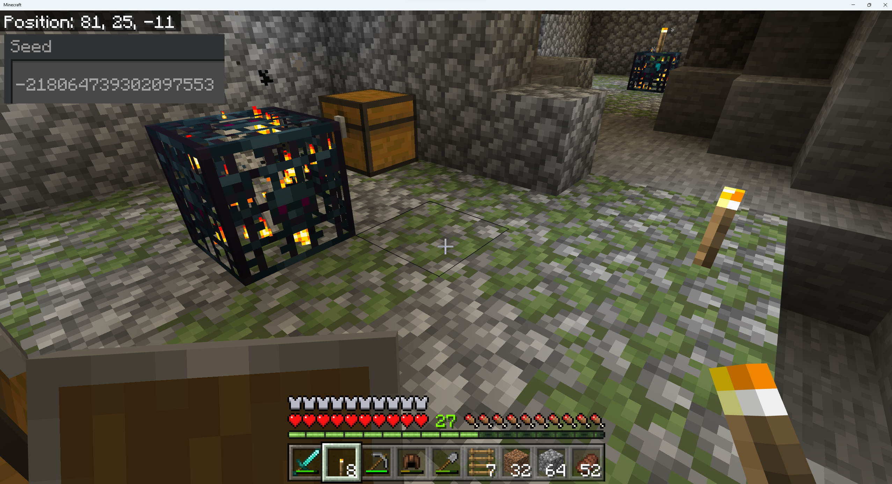

This tool is for Bedrock edition Minecraft save files, and this tool will NOT work with Java Minecraft save files. The 'Choose Files' button provides a file choosing dialog window. Select ALL the database files for the world you want to search. The Minecraft world database files have a 'ldb' file extension.
For Windows Bedrock Minecraft, the path to locate ldb files for a world is
C:/Users/<username>/AppData/Local/Packages/
Microsoft.MinecraftUWP_8wekyb3d8bbwe/LocalState/games/
com.mojang/minecraftWorlds/<world directory>/dbwhere <username> is your username on the windows machine and <world directory> is a random character string for the specific world you want to search. You will need to enable the 'show hidden files' option within Windows file explorer in order to find the AppData folder under your username. To help you find the correct world folder, inside each world folder is the 'world_icon' jpeg image that matches the preview image of the world within Minecraft. Within Windows file explorer turn on the file preview pane (View->Show->Preview pane) to view the world_icon jpeg image.
Accessing Android Bedrock Minecraft world save files is a messy process, and I am publicly shaming Mojang/Microsoft for not having an 'Export World' function availble for the Android version of Minecraft. Why!? Just Why!?
Anyways, Android Minecraft has two storage locations: Application (the default) and External. Minecraft world save files in the default storage location 'Application' cannot be accessed or read. Minecraft world save files can only be accessed if the world exists in the 'External' storage location. It is possible to switch between using Application and External for the file storage location by going to Android Minecraft Settings->Storage. When you change the file storage location, your Minecraft worlds are NOT transferred between storage locations. Thus, when you change to the external file storage location for the first time and go to play a world, the world list is empty. Don't panic. You can access your previous worlds by changing the storage location back to Application.
The only way to transfer a Minecraft world to the 'External' location from the 'Application' storage location is to sign up for a trial or pay for Realms Plus subscription. Upload the world of interest to Realms Plus, change the storage location to 'External' in the Minecraft app, then download the Realms Plus world, and it will now be available in the 'External' storage location.
Now that you have the Minecraft app using the 'External' storage location, and your world of interest is in the 'External' storage location either by having transferred one by downloading one from Realms Plus or having created the world while using the 'External' storage location to begin with, you can access the Minecraft save files. However, the standard file browser will not allow one to access the files. I have had success using FV File Explorer App. The app shows up on the play store as 'FV File Manager' by FolderV even though the name of the app after installing is 'FV File Explorer'. Use FV File Manager to save the db folder containing the ldb save files of interest to the Download folder. Minecraft save files are located at path
Android/data/com.mojang.minecraftpfe/files/games/
com.mojang/minecraftWorlds/<world directory>/db where <world directory> is a random character string for the specific world you want to search. Once the db folder and its ldb file contents are copied to the Download folder, then it is possible to choose ALL the ldb files from the 'Choose File' button dialog from your phones browser and perform the block search. Alternatively, you can transfer the db folder and its contents to a PC or Mac to perform the block search from their web browser after choosing the ldb files from the db file you downloaded. Again, I'll ask Why!? Just Why, Mojang!? Provide an Export World button, please!
No Information about the world is sent to the server. The reading of the world files is performed in your web browser client using a webassembly powered reader. Your private world information is kept on your own computer and this webpage does not use cookies.
This tool does not calculate block locations from the seed of the world (like the awesome chunkbase.com website). This tool reads the world files and searches for blocks matching your input string. If a block does not exist, it means that you have not explored enough of the world to generate chunks that contain the block you are searching for. In other words, this tool cannot calculate the location of blocks that do not exist in the world yet. However, if a block location is returned from the search you are guaranteed that it exists in your world.
If you have a very large map with many ldb files and the search takes a long time, then you can select a subset of the ldb files to speed the search up. You will need to try different subsets to identify which ones contain data for the location that is closest to your search XYZ location.
Have you tried searching for block names like 'sculk', 'obsidian', 'spawner', 'brewing', etc... This link provides a comprehensive list of block names that you can use in your search.
For questions, bug reports, feature requests, and fanmail visit the website's github or email to minexray@proton.me
Did you find Minecraft Bedrock Block Finder helpful? Leave a tip to show your appreciation.